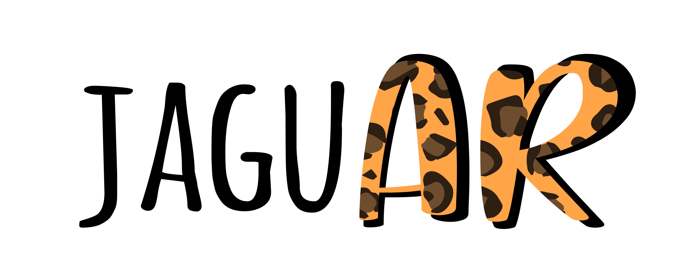

<nav class="navbar navbar-expand-lg navbar-light">
    <a class="navbar-brand" href="/">
        
    </a>
    <button class="navbar-toggler ms-auto me-3" type="button"
            (click)="isMenuCollapsed = !isMenuCollapsed">
        <span class="navbar-toggler-icon"></span>
    </button>
    <div [ngbCollapse]="isMenuCollapsed" class="collapse navbar-collapse">
        <ul class="navbar-nav me-auto">
          <li class="nav-item text-center">
            <a class="nav-link" routerLink="inicio" (click)="isMenuCollapsed = true">Inicio</a>
          </li>
          <li class="nav-item text-center">
            <a class="nav-link" routerLink="visor" (click)="isMenuCollapsed = true">Visor AR</a>
          </li>
          <li *ngIf="isLogged" class="nav-item text-center">
              <a class="nav-link" routerLink="admin" (click)="isMenuCollapsed = true">Panel administrador</a>
          </li>
        </ul>
        <ul class="navbar-nav text-center ms-auto me-3">
            <li *ngIf="!isLogged">
                <a class="nav-link" routerLink="login" (click)="isMenuCollapsed = true">Iniciar sesión</a>
            </li>
            <li *ngIf="isLogged" class="nav-item" ngbDropdown display="dynamic" placement="bottom-right">
                <a class="nav-link" tabindex="0" id="dropdownSession" ngbDropdownToggle role="button"></a>
                <div ngbDropdownMenu class="dropdown-menu" aria-labelledby="dropdownSession">
                    <a class="btn btn-trans nav-link" routerLink="perfil" (click)="isMenuCollapsed = true">Mi perfil</a>
                    <a class="btn btn-trans nav-link" (click)="isMenuCollapsed = true; openMenuModal(content)">Cerrar sesión</a>
                </div>
            </li>
        </ul>
    </div>
</nav>

<!-- MODAL LOGOUT -->
<ng-template #content let-modal>
    <div class="modal-header pb-2">
        <div class="col-2"></div>
        <h2 class="modal-title text-center col">Cierre de sesión</h2>
        <button type="button" class="close col-2 my-auto" aria-label="Close" (click)="modal.dismiss('Cross click')">
            <span aria-hidden="true" class="mdi mdi-close-thick"></span>
        </button>
    </div>
    <div class="modal-body p-3">
        <p>¿Está seguro de que desea cerrar sesión?</p>
    </div>
    <div class="modal-footer">
        <div class="row col-12">
            <div class="col-6"><button class="btn btn-secondary w-100" (click)="modal.dismiss('Cross click')">Cancelar</button></div>
            <div class="col-6"><button class="btn btn-yellow w-100" (click)="onLogOut()">Cerrar sesión</button></div>
        </div>
    </div>
</ng-template>
